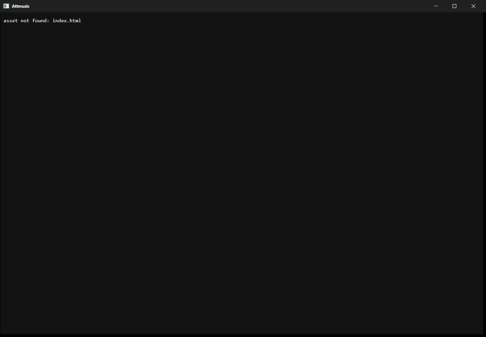

attmusic Desktop app · built, not released
A music player for Windows with a discovery view in the radiooooo style.
What is in it
- A grid and a list view of tracks, a player bar and a filter bar.
- A discovery view in the radiooooo style.
- Like and dislike on tracks, local tag reading and writing, and metadata lookup from MusicBrainz.
- A settings view.
- Windows desktop app built with Tauri 2 (Rust) and a TypeScript interface. It starts in a 1200 by 800 window.
The app

Please note
attmusic talks to third-party music services. Those services have their own terms, and you are responsible for using it in line with them and with the copyright of the music you play. It is not a way around anyone's licence.
Status
Windows installers exist on my PC (an MSI of 6.3 MB and a setup exe of 4.3 MB, built on 11 Nov 2026), but there is no public download yet.